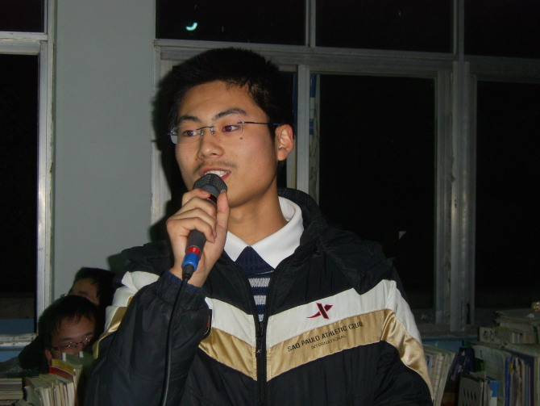
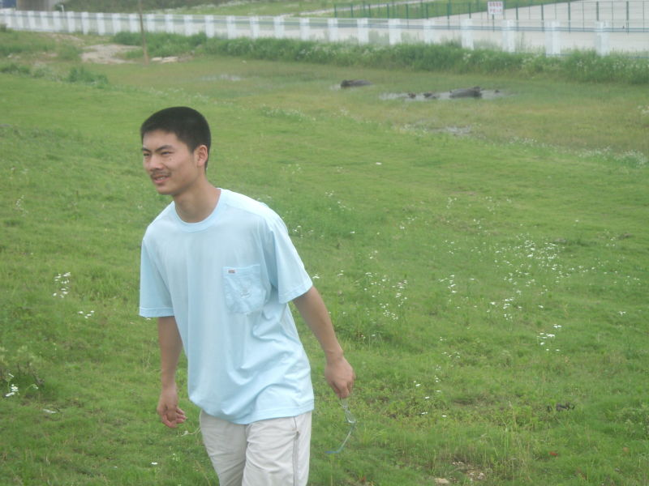
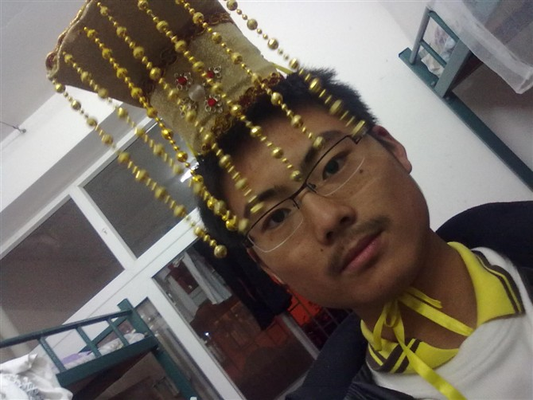
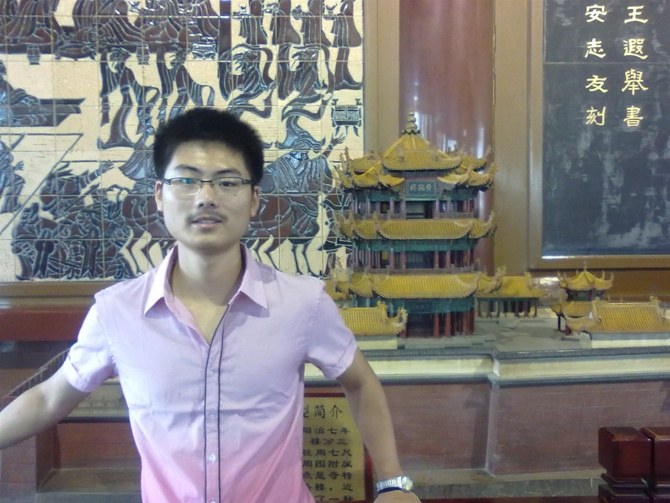

我一直否认自己是一个码农，总感觉那是一个比较苦b的行业，可事实就是如此。按照自己的风格，给你——我的谦哥，写下这封信，希望你以后的路越走越顺、越走越远！
我不喜欢自拍，但不是因为自己长得太挫，而是不知道在相机前面应该保持什么样的姿态。这封信中会附带几张以前和现在的照片，希望在谦哥以后寂寞的时候可以想起曾经还有这样一个屌丝以你为榜样，向你看齐！
你可以把这封信当做我的自述，因为我说自己会比较多。
使劲回忆了一下，当年我们相见的第一面。
回忆三分钟...
三分钟已经过去了，这个不能怪我，记性不好，没想起来。唯一能记起的是那次哆哆嗦嗦的面试，我人生的第一面交给了社实。
很庆幸能够走进社实这个大家庭，“项目部”这块痕迹会永远印在我的记忆里。
那时的谦哥还没有现在这么猥琐，但是依然和蔼可亲，平易近人，幽默风趣，平淡朴实...（此处省略一千个形容词，褒义）事实上，你在我心目中确实也是那样，我很愿意把想法吐槽给你听，然后细细品味你给我的批评和建议，因为我信任你！
上一张图片是我高三时候照的，青涩不敢说，至少还是个男孩。
[上图]那年我高中毕业，完成了我人生的第一个使命——怀抱大学。
从小爸妈把我丢给爷爷奶奶，所以《世上只有妈妈好》我会情不自禁的唱成世上只有奶奶好，我的童年不是很完整。但是我依然感谢那时的爸妈，他们的不在身边让我有了更强的独立意识和自强意识。毕业之后，离开了那个充满田园气息的小镇，踏上真正的漫漫人生路...
谦哥在我心中一直是很棒的，相知，我没有理解这是一种什么样的境界，但是“再相识”还是可以说两句。
随着年龄的增长，社会阅历的增长，渐渐地，靖已经有了一些变化。
我不再迷茫，现在的我有一个目标，立志在三五年之内成为中国前端届的顶梁柱，有目标，我不会再彷徨。
我不再感叹，身边的人常问我，你怎么又叹气了，我通常没有感觉到自己的叹息声。现在我能听得到了，这很好，有的时候确实很累，叹息声是一个信号，它叫我去休息。
你考研复习那段时间，我们走到了一起（激情，基情...)，一起自习，一起吃饭，一起骑车，一起继续自习...比较可惜的是没有吃到谦哥卡下的饭，至今还尤为憧憬~
那几天，我在你身上看到了毅力和坚持。不知道是什么信念支撑你昼夜循环奔波于宿舍和图书馆之间，不过，我想，你成功考上心目中理想的学校已经说明了这个问题。这信念在你脸上充满喜悦之色的那一刻也悄悄走进了我的心房，我会紧紧地拽住不放！
我准备了四张照片。第三部分，我想说说，嫂子的事情。
谦哥，你也老大不小了，单身几十年，我能够体会“撸至深处鲁智深”的空虚。很希望看到谦哥牵着（不知道现在被谁包养着的）嫂子的手一起毕业，看来这个已经是无望了。
谦哥，加油！！！
2013-6-20 1:12:26，这是搜狗输入法按下sj这两个键显示出来的东西。还要考试，很多想说的话没说出来（憋在心里让他长霉算了)。
以后相见的机会会有的，一个电话，一封邮件，一声呼喊，有需要的我的地方，我一定不遗余力（借用某菜的一句话，前提是我有时间）。
最后附上第四张照片，P.S:照片上穿的那件衣服不见了。
好友，珍重！